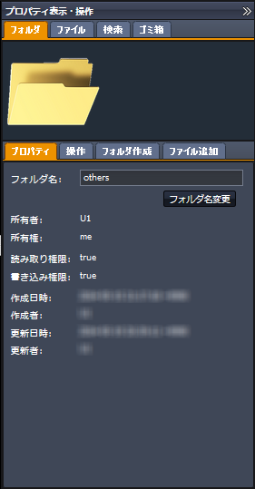
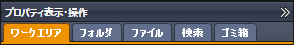
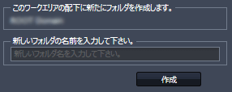

SecretFilesマニュアル
3. SecretFilesサービス
3.2 各ペインの説明
3.2.4 右ペイン(プロパティ表示・操作ペイン)
右ペインは初期状態では、右端に隠れた状態になっています。
表示されているタイトルバーの上端にある をクリックして下さい。
表示領域がスライドして、ペインが表示されます。

3.2.4.1 ワークエリア
プロパティペインのタイトルバーの直下に複数のタブが表示されています。

その左端に「ワークエリア」という表示があります。
これをクリックして下さい。(初期状態では、既に選択されています。)
タブのすぐ下に、ワークエリアを示すイメージアイコンが表示されます。
もしアイコンが表示がされていない場合には、ワークエリアが選択されていない状態ですので、画面左端のワークエリア1またはワークエリア2にて任意のワークエリア名をクリックして下さい。
ワークエリアが選択された状態では、イメージアイコンが表示され、作業用のペインの「このワークエリアの配下に新たにフォルダを作成します。」と書かれた領域にワークエリア名が表示されます。
フォルダ作成
ワークエリアの直下にフォルダをつくる場合には、「新しいフォルダの名前を入力して下さい。」と書かれた領域内のフィールドにフォルダの名前を入力し、「作成」ボタンをクリックして下さい。

作成に成功したら、フォルダツリーがリフレッシュして、追加されたことを確認できます。